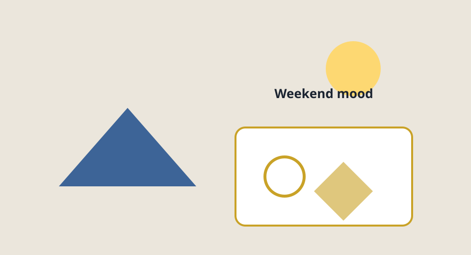
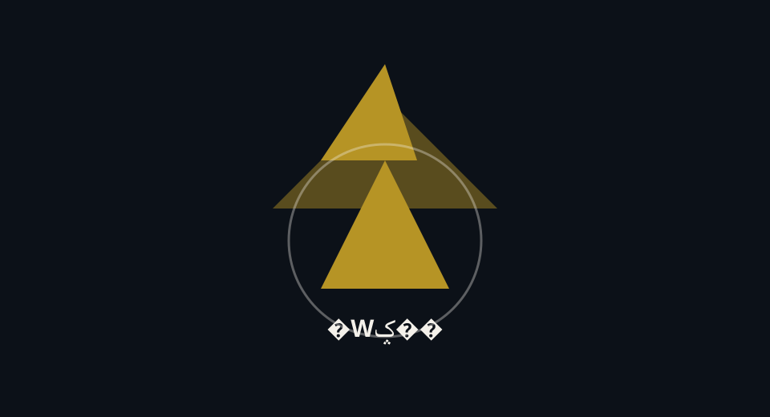
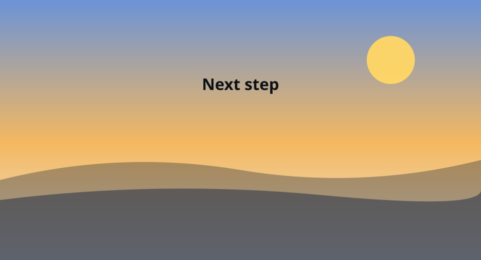

Sample Member
散布流子
○コーポレーション新入社員（サンプル）。このページは1つの HTMLのまま、縦にスクロールすると画面の高さ（100vh）ごとにセクションが切り替わる構成です。
Intro
自己紹介
名前は「さんぷ りゅうこ」と読みます。現場では「流子さん」で呼んでもらえるとうれしいです（サンプル設定）。
はじめまして、散布流子です
関西出身で、大学では情報デザインを専攻していました。ユーザーが迷わない導線や、説明テキストの書き方に興味があります。
学生時代は学園祭の実行委員を務め、予算管理と連絡業務を経験しました。細かい段取りとチーム連携が得意です。

Hobby
趣味
オフの過ごし方。リフレッシュは大事です。
趣味はカメラ散歩とコーヒー
休みの日は、朝いちばんに街を歩いて写真を撮ります。光の当たり方で同じ場所でも全然違う絵になるのが面白いです。
あとは喫茶店で豆を選ぶ時間が好きです。苦みと酸味のバランスを語れるようになりたい、というのが今の小さな目標です。

Highlight
押しポイント
一緒に働くみなさんに伝えたい「この人に任せたい」ポイントです。
私の押しポイントは「言語化」です
曖昧な依頼を聞き返して、誰が・いつまでに・何をすればよいかをメモに落とすのが得意です。議事メモやタスク整理も積極的に引き受けます。
もうひとつは「初見の目」です。ドキュメントの抜けや、画面遷移の違和感に気づきやすいので、レビューではそこを重点的に見ます。

Aspiration
今後の抱負
半年後・1年後に振り返りたい目標です。
小さな PR を積み重ねます
まずはリポジトリのルールとブランチ運用に慣れ、週に数本は意味のあるプルリクエストを出せる状態を目指します。レビューコメントは宝物だと思っています。
中期的には、画面だけでなく API やログにも触れて、障害の切り分けまでできるようになりたいです。先輩方の背中を追いかけます。